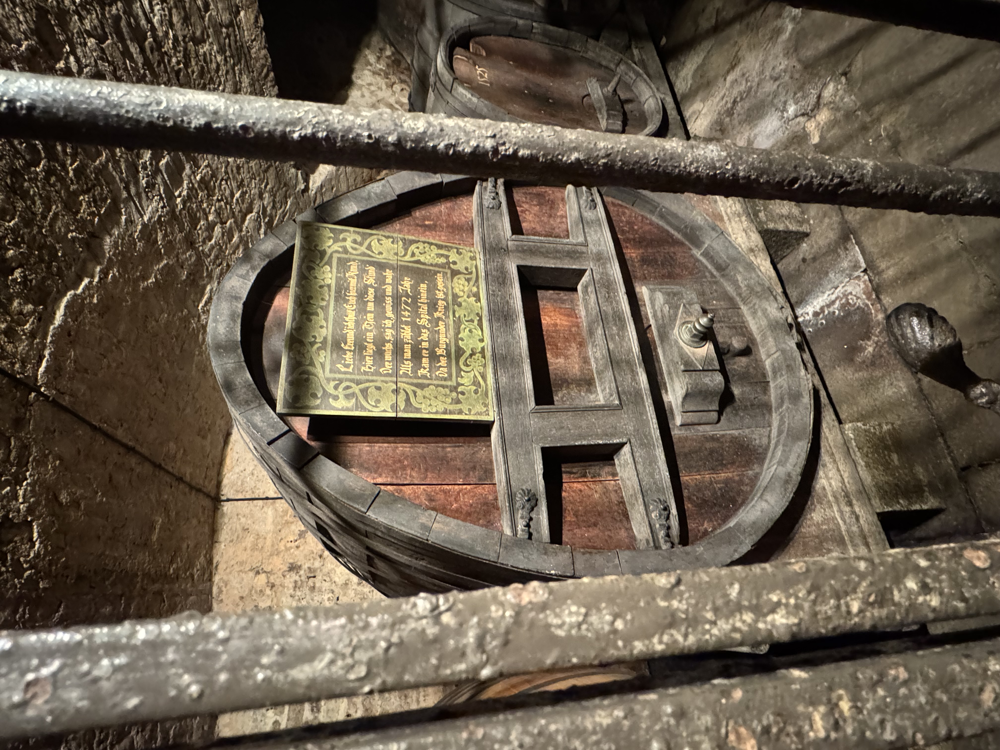
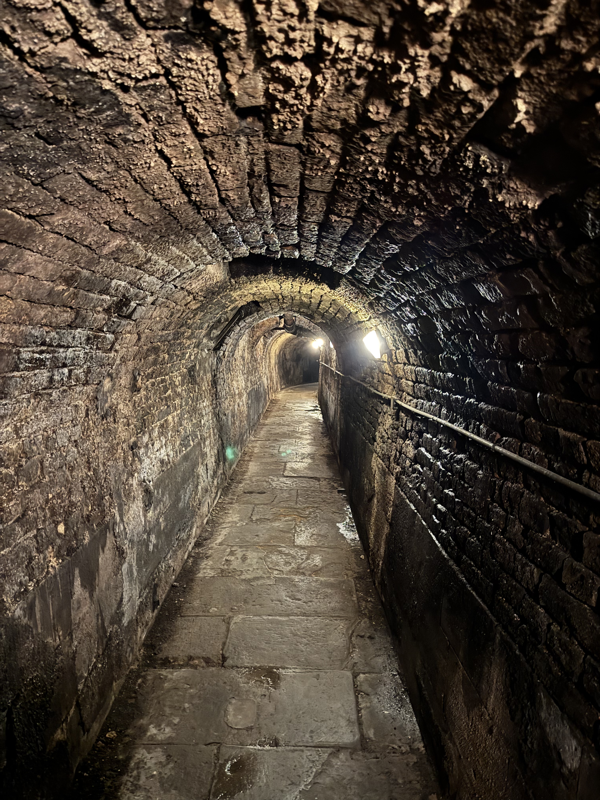

Task: Experiment with alt text, width, and height attributes.
Straßburg ist eine charmante Stadt in Frankreich, die sich in unmittelbarer Nähe zur deutschen Grenze befindet. Die beiden Länder werden hier lediglich durch eine Brücke über den Rhein getrennt. Im Folgenden möchte ich einige Eindrücke, Bilder und persönliche Erlebnisse meiner Reise mit euch teilen.

Während meiner Reise nach Straßburg besuchte ich einen der historischsten und einzigartigsten Orte der Stadt: die Cave Historique des Hospices de Strasbourg. Dieser Weinkeller wurde im Jahr 1395 im Herzen des städtischen Krankenhauses von Straßburg erbaut und ist über 600 Jahre alt. In der Vergangenheit diente der Keller nicht nur zur Lagerung von Wein, sondern auch zur Aufbewahrung von Getreide und anderen Lebensmitteln. Er spielte eine wichtige Rolle bei der Versorgung von Patienten und Pilgern.
Dort konnte man verschiedene Weine mit unterschiedlichen Jahrgängen kaufen (wir haben auch eine Flasche gekauft – sie war ausgezeichnet!).

Besonders bekannt ist die Cave Historique für ihr Weinfass aus dem Jahr 1472 – eines der ältesten erhaltenen Weine der Welt. Der Keller wurde im Laufe der Jahrhunderte mehrmals renoviert, ohne dabei seinen ursprünglichen Charme zu verlieren. Heute dient er nicht nur als Museum, sondern auch als aktiver Weinkeller für lokale Winzer.


Das ist das Straßburger Münster bei Nacht. Die gotische Architektur und die beeindruckende Rosette über dem Hauptportal sind wirklich faszinierend. Die Kathedrale ist ein Wahrzeichen der Stadt und ein Meisterwerk der Baukunst des Mittelalters.